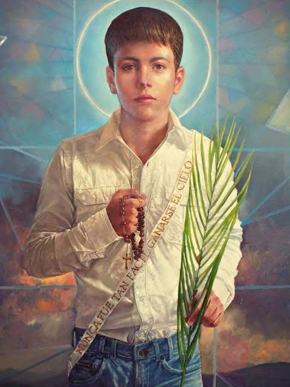

CAPÍTULO I
Uma infância de fé
José Luis Sánchez del Río nasceu em 28 de março de 1913, em Sahuayo, no estado de Michoacán, México. Carinhosamente chamado de “Joselito”, cresceu numa família católica fervorosa, onde aprendeu a amar a Eucaristia e a Virgem de Guadalupe. Nessa época, o governo do presidente Plutarco Elías Calles impôs leis duras contra a Igreja: templos fechados, padres expulsos e o culto público proibido.
CAPÍTULO II
O porta-estandarte
Em 1926, católicos se levantaram na chamada Guerra Cristera. Os irmãos de José se uniram ao movimento, e ele, com apenas 13 anos, insistiu até ser aceito. Tornou-se porta-estandarte, levando a bandeira de Cristo Rei. Em uma batalha, ao ver o cavalo de seu general ser abatido, José lhe ofereceu o seu para que escapasse. Foi então capturado pelas tropas federais.
CAPÍTULO III
Fiel até o fim
Preso na igreja paroquial de Sahuayo, transformada em cárcere, José foi pressionado a renegar a fé em troca da liberdade. Recusou sempre. Escreveu à mãe dizendo que estava conformado com a vontade de Deus.
Nunca foi tão fácil ganhar o Céu como agora.
Em 10 de fevereiro de 1928, teve as plantas dos pés feridas e foi obrigado a caminhar até o cemitério. A cada passo, gritava “¡Viva Cristo Rey!”. Ali foi morto, aos 14 anos.
CAPÍTULO IV
Legado de santidade
-
1913
Nasce em 28 de março, em Sahuayo, Michoacán, México.

-
1927
Aos 13 anos, junta-se aos Cristeros como porta-estandarte.
-
1928
Martirizado em 10 de fevereiro, aos 14 anos.
-
2005
Beatificado em 20 de novembro, em Guadalajara.
-
2016
Canonizado pelo Papa Francisco em 16 de outubro.
Sua festa é celebrada em 10 de fevereiro. Hoje é exemplo para jovens do mundo inteiro de coragem, pureza e amor a Cristo.

REZEMOS
Oração a São José Sánchez del Río
Senhor Deus, que concedestes a palma do martírio a São José Sánchez del Río por professar e defender com o seu sangue a fé em Cristo Rei do Universo, concedei-nos, por sua intercessão, a graça de sermos como ele: fortes na fé, seguros na esperança e constantes na caridade. Nós vos pedimos por Cristo, nosso Senhor. Amém.
¡Viva Cristo Rey!